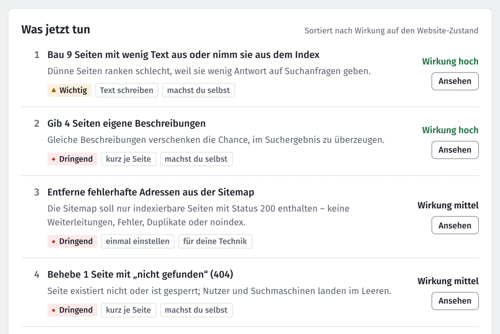

Blog · Ratgeber · · von the-neyro
Warum findet Google meine Website nicht?
Sechs häufige Gründe, warum deine Website bei Google fehlt oder weit hinten steht, und wie du die meisten davon selbst prüfst. Ohne Fachchinesisch.
Du suchst deinen Betrieb bei Google und findest: nichts. Oder nur dein Branchenbuch-Eintrag steht da, nicht deine Website. Das hat fast immer einen von wenigen Gründen, und die meisten kannst du selbst prüfen.
Zuerst: Kennt Google deine Website überhaupt?
Gib bei Google site:deine-domain.de ein, mit deiner eigenen Adresse statt deine-domain.de. Google zeigt dann Seiten, die es von deiner Website kennt. Vollständig ist diese Liste nicht, für einen ersten Blick reicht sie. Ob eine bestimmte Seite bei Google ist, sagt dir genau die URL-Prüfung in der Search Console.
- Es kommt gar nichts: Google kennt die Website nicht oder darf sie nicht aufnehmen. Lies Grund 1 bis 3.
- Deine Seiten erscheinen, aber nicht bei deinem Suchbegriff: Google kennt dich, hält andere aber für passender. Lies Grund 4 bis 6.
1. Die Website ist neu
Google findet neue Websites von selbst, aber das kann Tage bis Wochen dauern. Schneller geht es, wenn du Google Bescheid sagst: mit der kostenlosen Search Console und einer Sitemap. Wie das geht, steht in Google Search Console einrichten.
2. Die Website sperrt Google aus
Das passiert öfter, als man denkt. Beim Bau einer Website wird Google gern ausgesperrt, damit die halbfertige Seite nicht auftaucht, und danach vergisst man, die Sperre wieder aufzuheben.
- In WordPress: Einstellungen → Lesen. Ist bei „Sichtbarkeit für Suchmaschinen“ ein Haken gesetzt, nimm ihn heraus und speichere.
- Einzelne Seiten können mit „noindex“ gesperrt sein, etwa über eine Einstellung in Yoast oder Rank Math. Dann darf Google sie nicht aufnehmen.
- Die Datei
robots.txtist etwas anderes: Sie verbietet Google nur das Abrufen. Solche Seiten können trotzdem im Suchergebnis auftauchen, nur ohne Beschreibung. Und ein „noindex“ auf einer perrobots.txtgesperrten Seite sieht Google nie.
Nextfix prüft das bei jeder Seite: Seiten für Google gesperrt und noindex per X-Robots-Tag.
3. Seiten sind kaputt oder nicht erreichbar
Liefert eine Seite „nicht gefunden“ (Fehler 404), nimmt Google sie nicht auf. Eine einzelne Weiterleitung ist dagegen normal, Google nimmt dann das Ziel. Ärger machen Ketten über mehrere Stationen und Schleifen. Stehen solche Adressen in der Sitemap, verwirrt das zusätzlich. Typisch sind alte Aktionsseiten, die gelöscht wurden, auf die aber noch Links zeigen.
Prüfungen dazu: Seiten mit 4xx-Statuscode und Falsche Seiten in sitemap.xml.
4. Der Seitentitel sagt nicht, was du machst
Der Seitentitel ist die blaue Zeile im Suchergebnis und das Wichtigste, was Google über eine Seite liest. Steht dort nur „Startseite“ oder dein Firmenname, weiß Google nicht, dass du Maler in Bremen bist. Wie ein guter Titel aussieht, steht in Seitentitel für Handwerksbetriebe.
5. Auf der Seite steht zu wenig
Eine Seite mit drei Sätzen und einem Foto beantwortet kaum eine Frage. Google zeigt lieber Seiten, auf denen etwas steht: was du anbietest, wo, für wen, was es kostet oder wie es abläuft. Nextfix meldet Seiten mit weniger als 200 Wörtern im Hauptinhalt: Wenig Text. Das ist die Grenze von Nextfix; Google selbst nennt keine Mindestzahl.
6. Du suchst nach dem falschen Begriff
Du findest dich bei „Malerbetrieb Mustermann“, aber nicht bei „Maler Bremen“? Dann kennt Google dich, aber andere passen für den allgemeinen Begriff besser. Hier helfen ein klarer Titel, mehr Text zu genau dieser Leistung und Geduld. Neue Websites haben außerdem noch kaum Links von anderen Seiten, etwa von Verbänden, Partnern oder der Lokalzeitung; auch das wächst erst mit der Zeit. Für die Suche vor Ort zählt außerdem dein kostenloses Unternehmensprofil bei Google, also der Eintrag mit Karte, Öffnungszeiten und Bewertungen. Das richtest du direkt bei Google ein; Nextfix prüft es nicht.
Selten, aber möglich
Google kann eine Website auch wegen Spam abstrafen (manuelle Maßnahme) oder wegen eines Sicherheitsproblems ausblenden, etwa nach einem Hack. Beides zeigt dir die Search Console unter „Sicherheit und manuelle Maßnahmen“.
Nextfix findet das für dich
Die Gründe 2 bis 5 prüft Nextfix bei jedem Durchlauf an allen Seiten und sortiert sie nach Wirkung. Oben in „Was jetzt tun“ steht, was du zuerst angehen solltest.

Was Nextfix nicht kann: dir versprechen, dass du danach auf Platz 1 stehst. Das kann niemand. Aber du weißt, dass es nicht an einer vergessenen Sperre oder einer kaputten Seite liegt.
Quellen
- Google Search Central: Der site:-Operator
- Google Search Central: Einführung in robots.txt
- Google Search Central: Spam-Richtlinien